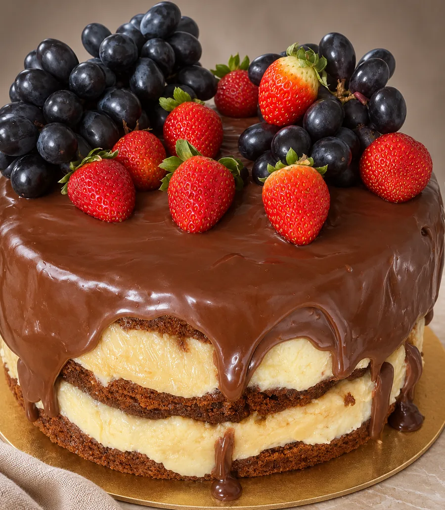
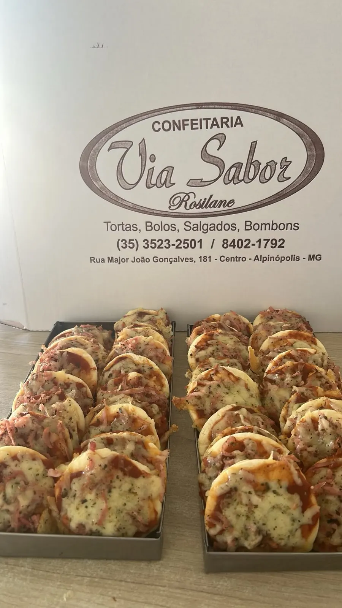

Bolos
Recheios
- Ninho com morango
- Creme com morango
- Creme com Sonho de Valsa
- Creme com abacaxi
- Brigadeiro
- Prestígio
- Ninho com brigadeiro
O bolo redondo pode levar 2 recheios.
Coberturas
- Chantilly
- Raspas de chocolate
Centro de Alpinópolis–MG · Produção própria
Para aniversários, reuniões de família ou para o dia a dia. Veja as fotos do que fazemos na Confeitaria Via Sabor e combine seu pedido direto pelo WhatsApp.
Encomendas feitas somente pelo WhatsApp · Atendimento de segunda a sábado
Ver fotos e sabores
Para montar a mesa da festa ou levar para casa. Toque em uma categoria para ver as fotos.
Tudo o que aparece aqui foi produzido na nossa confeitaria. Toque em qualquer foto para ampliar e pedir algo parecido no WhatsApp.
Escolha seus sabores preferidos e chame no WhatsApp para consultar valores, tamanhos e disponibilidade para a sua data. Atualizado em novembro de 2026.
O bolo redondo pode levar 2 recheios.
Torta de frango — a mais conhecida da Via Sabor — e outras tortas salgadas sob encomenda, para o dia a dia ou para receber a família. Tamanhos e disponibilidade combinados no WhatsApp.
Consultar tortas no WhatsAppOs pedidos são combinados somente pelo WhatsApp, direto com a confeitaria.
A mensagem já abre com os campos produto, data e quantidade para você preencher.
Bolos e docinhos da Via Sabor em comemorações reais de clientes da cidade, de aniversários de 26 a 80 anos.
Todas as encomendas são feitas somente pelo WhatsApp (35) 98402-1792. Você pode escolher uma foto do site, ver os sabores do cardápio e enviar sua mensagem com o produto e a data.
Atendemos tanto festas e aniversários quanto pedidos para o dia a dia, reuniões em família e finais de semana — como a nossa torta de frango, bolos, doces e salgados. Consulte a disponibilidade pelo WhatsApp.
No nosso cardápio você encontra opções como Ninho com morango, Creme com morango, Creme com Sonho de Valsa, Creme com abacaxi, Brigadeiro, Prestígio e Ninho com brigadeiro, além de cobertura em chantilly ou raspas de chocolate. No bolo redondo, você pode combinar até 2 recheios.
Sim. Basta dizer na conversa do WhatsApp para quantas pessoas será a festa ou reunião que ajudamos você a calcular a quantidade ideal de bolo, docinhos e salgados.
Recomendamos chamar no WhatsApp o quanto antes para garantir sua data na agenda, principalmente para finais de semana e bolos decorados. Na conversa, informamos a disponibilidade para o dia que você precisa.
Estamos na Rua Major João Gonçalves, 255, no Centro de Alpinópolis (MG). Funcionamos de segunda a sexta das 8h às 18h30 e aos sábados das 8h às 17h30. Os detalhes e o horário de retirada do pedido são combinados pelo WhatsApp.

A Confeitaria Via Sabor prepara bolos decorados, doces, bombons, salgados e tortas sob encomenda em Alpinópolis–MG. Seja para montar a mesa completa de um aniversário ou para levar a nossa conhecida torta de frango para casa, cada pedido é combinado direto com você pelo WhatsApp e feito aqui na nossa cozinha.
Alguns ovos que a confeitaria já preparou em anos anteriores.
Consultar disponibilidadeEncomendas são feitas somente pelo WhatsApp. Para dúvidas rápidas ou localização, confira nossos canais abaixo.